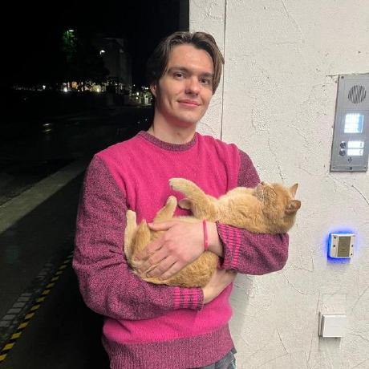
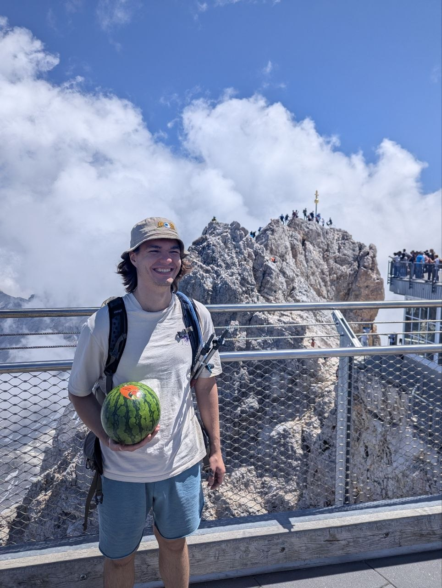

How Much of Your VLA is kNN
Looking up the nearest demonstrations and replaying their actions, with no policy training, reaches 91.7% success on LIBERO. We use that lookup to measure how much of a VLA’s benchmark score is retrieval.
I’m a researcher at Sereact, working on vision-language-action models, robotic manipulation, and open tools for robot learning.
Looking up the nearest demonstrations and replaying their actions, with no policy training, reaches 91.7% success on LIBERO. We use that lookup to measure how much of a VLA’s benchmark score is retrieval.
An experimental, modular robotics stack built on Dora. Modules swap in and out easily: a simulator (MuJoCo, RoboLab, …) or a real robot, the recording module, and so on.
Self-supervised 3D object embeddings for robot grasping.
My master’s thesis at TUM.
I studied mathematics at HSE, with a minor in bioinformatics, and AI through the AI Masters program at Moscow State University’s Institute of AI. For almost three years, I worked at Ksitest, using genetics and machine learning to help farmers breed better cows.
I enjoyed the challenges of bioinformatics, but found my direction in robotics. I went on to do an M.Sc. in Mathematics in Data Science at TUM and joined RoboTUM. Bringing AI into the physical world feels like the right fit—and the field I want to build my career in.

I like hiking and football. During my bachelor’s, I played for the Shabolovka Wolverines in HSE’s top university football league.
